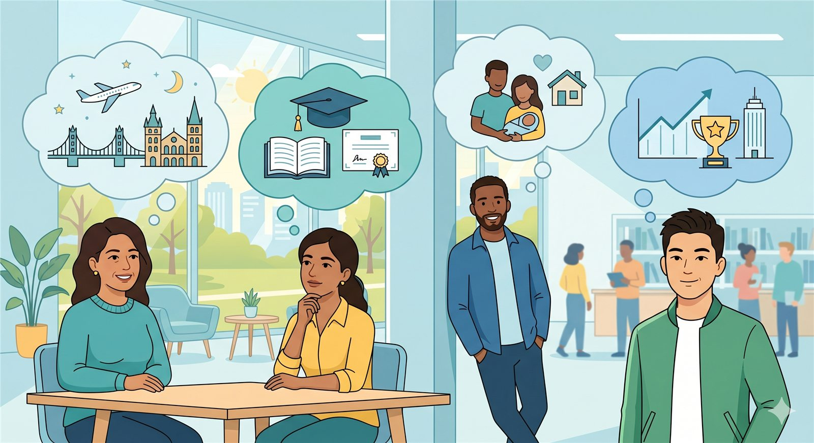

Intermediate English · Unit 2
Wishes, Hopes and Dreams
In this lesson, students learn how to talk about wishes, hopes, and dreams in English. These ideas are connected, but they are not exactly the same.
Understanding the difference helps students express personal goals, desires, life plans, and future possibilities more clearly.
Learning Outcome: To differentiate wishes, hopes, and dreams and use functional language to express personal desires and future goals.

What is the difference?
A wish, a hope, and a dream can all describe something a person wants. However, each word has a different meaning and feeling in English.
A wish
A wish usually expresses a strong desire for something to be different, better, or possible. It can feel less realistic or more hypothetical.
I wish I had more free time. I wish I could travel this year.A hope
A hope is something you want to happen in the future. It usually sounds more possible, realistic, or achievable than a wish.
I hope I pass my exam. I hope to study abroad one day.A dream
A dream is a big personal goal or a deep desire for the future. Dreams are often emotional, meaningful, and connected to life goals.
I dream of having a baby. I dream of living in another country.How to use “wish”
We use wish when we want something to be different from reality, or when we want something that may not be easy or possible right now.
Wish about the present
I wish + past formThis structure talks about a present situation that the speaker wants to change.
I wish I had more money. I wish I were more confident.Wish about ability or possibility
I wish + could + verbThis structure expresses something the speaker wants to be able to do.
I wish I could speak English fluently. I wish I could travel to Europe this year.How to use “hope”
We use hope when we want something good to happen in the future. Hopes usually sound possible, realistic, or achievable.
Hope + sentence
I hope + subject + verbUse this structure when you hope that something happens.
I hope I can visit Europe one day. I hope my family stays healthy.Hope + infinitive
I hope to + verbUse this structure when the subject is the same person who has the hope.
I hope to get a better job next year. I hope to improve my English this year.How to use “dream”
We use dream to describe a deep desire, life goal, or important future objective. Dreams are often bigger and more emotional than hopes.
Dream of + verb-ing
I dream of + verb-ingUse this structure to talk about a future action or life goal.
I dream of having a baby. I dream of becoming a doctor.Dream of + noun
I dream of + nounUse this structure when the dream is a thing, place, role, or life situation.
I dream of a beautiful house. I dream of a peaceful life.Wishes vs. hopes vs. dreams
This table summarizes the main differences. Notice how each expression changes the meaning and the feeling of the sentence.
| Expression | Meaning | Feeling | Example |
|---|---|---|---|
| I wish... | A desire for something to be different or possible. | Often hypothetical, emotional, or less realistic. | I wish I had more time to travel. |
| I hope... | A desire for something good to happen in the future. | Usually possible, realistic, and positive. | I hope I can visit Europe one day. |
| I dream of... | A big personal goal or deep future desire. | Meaningful, long-term, and connected to life goals. | I dream of having a baby. |
| I have always wanted to... | A long-standing desire or goal. | Personal, emotional, and often connected to experiences. | I have always wanted to go to Europe. |
Functional language
These expressions help students talk about desires, goals, future plans, and meaningful life experiences.
Main expressions
- I wish I could...
- I wish I had...
- I hope I can...
- I hope to...
- I dream of...
- I have always wanted to...
Example sentences
- I wish I had more time to travel.
- I hope I can visit Europe one day.
- I have always wanted to go to Europe.
- I dream of having a baby.
- One of my biggest dreams is to have my own house.
Experiences and future desires
Sometimes we talk about experiences we have already had, and sometimes we talk about things we still want to do. This helps us connect the past, present, and future.
I have played paintball.
This sentence talks about a real experience. The person has already done it. We can use the present perfect to talk about life experiences.
I have played paintball, but I have never gone skydiving.I have always wanted to go to Europe.
This sentence talks about a long-standing desire. The person has wanted this for a long time, but it may not have happened yet.
I have always wanted to go to Europe because I love history and culture.Common differences and mistakes
These notes help students choose the right expression depending on what they want to communicate.
Correct: I hope I pass the exam. This sounds possible and realistic.
Correct: I wish I had more free time. This suggests that I do not have enough free time now.
Correct: I dream of becoming a professional musician. This is a meaningful long-term goal.
Correct: I have always wanted to go to Europe. This means the desire has existed for a long time.
Final reflection
This lesson prepares students to discuss pictures, talk about personal goals, and later write letters or emails requesting help to achieve a dream.
Think about your life
What do you wish for? What do you hope for? What do you dream of? Try to notice the difference between a wish, a hope, and a dream before you use these expressions in speaking or writing.